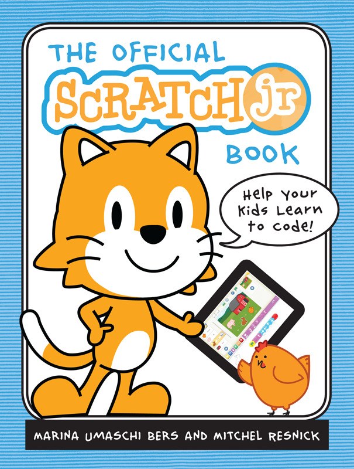

About ScratchJr
This is background information about ScratchJr. You can find answers to troubleshooting questions in the "FAQ" section.
What is ScratchJr?
ScratchJr is an introductory programming language that enables young children (ages 5-7) to create their own interactive stories and games. Children snap together graphical programming blocks to make characters move, jump, dance, and sing. Children can modify characters in the paint editor, add their own voices and sounds, even insert photos of themselves -- then use the programming blocks to make their characters come to life.
ScratchJr was inspired by the popular Scratch programming language (http://scratch.mit.edu), used by millions of young people (ages 8 and up) around the world. In creating ScratchJr, we redesigned the interface and programming language to make them developmentally appropriate for younger children, carefully designing features to match young children's cognitive, personal, social, and emotional development.
ScratchJr is available as a free app for both iPad and Android tablets. For more information about ScratchJr, see http://scratchjr.org.
Why Did We Create ScratchJr?
Coding (or computer programming) is a new type of literacy. Just as writing helps you organize your thinking and express your ideas, the same is true for coding. In the past, coding was seen as too difficult for most people. But we think coding should be for everyone, just like writing.
As young children code with ScratchJr, they learn how to create and express themselves with the computer, not just to interact with it. In the process, children learn to solve problems and design projects, and they develop sequencing skills that are foundational for later academic success. They also use math and language in a meaningful and motivating context, supporting the development of early-childhood numeracy and literacy. With ScratchJr, children aren't just learning to code, they are coding to learn.
Who Created ScratchJr?
ScratchJr is a collaboration between the Developmental Technologies (DevTech) Research Group at the Eliot-Pearson Department of Child Study and Human Development at Tufts University (led by Marina Umaschi Bers, with contributions from Amanda Strawhacker, Claire Caine, Louise Flannery, Elizabeth Kazakoff and Dylan Portelance), the Lifelong Kindergarten group at the MIT Media Lab (led by Mitchel Resnick, with contributions from Chris Garrity, Tim Mickel, Carl Bowman, Champika Fernando, Natalie Rusk, Sayamindu Dasgupta, and Chris Graves), and the Playful Invention Company (led by Paula Bontá and Brian Silverman, with contributions from Jack Geddes and Adrian Gabriel). The Android version of ScratchJr was implemented by Two Sigma (led by Mark Roth, with contributions from Kevin Hu), with input from Benesse Corp.
The graphics and illustrations for ScratchJr were created by HvingtQuatre Company (led by Julien Gelifier and Adrien Valesa), Sarah Thomson, Peter Mueller, and Jillian Lombardi. Paula Aguilera of the MIT Media Lab produced the ScratchJr video. We would also like to thank everyone who participated in the beta-test communities for iPad and Android, particularly Sergio Antolinez, Vandendaele Didier, and Sjoerd Dirk Meijer.
Who Helped to Translate ScratchJr?
ScratchJr has been translated into Spanish by Teresa Martínez Pérez, childhood education student; Marta Bonet Garrosa, Manuela Lara Lara, and Lidia Piñeiro Cordero, of Editorial Santillana; Sergio Antolinez, CEO of Tecnoaprendo; and Luisa María Palacios Maroto.
Who Supported ScratchJr?
The ScratchJr project has received generous financial support from the National Science Foundation (NSF DRL-1118664), Scratch Foundation, LEGO Foundation, British Telecommunications, and Adobe Systems.
If you enjoy using this free app, please consider making a donation to the Scratch Foundation (www.scratchfoundation.org), a nonprofit organization that provides ongoing support for ScratchJr. We appreciate donations of all sizes, large and small.
Platinum supporters from the ScratchJr Kickstarter campaign: Jeremy Deutsch, Kenneth Ehlert, Catherine Greenspon, Mark Loughridge, JoAnn Gantz Bendetson, and Shirley Resnick.
Other supporters from the ScratchJr Kickstarter campaign: Aaron Suggs, Abe Stein, Abinash Bishoyi, Adam Bellow, Adam Skylar Miner, Adriana Moscatelli, Adrienne Tilley, Agnes Wagenhäuser, Aidan Raney, Aiden & Eryn Murphy, Akim Boyko, Akinsola Akinbiyi, Alain-Christian, Albert Oldfield, Alex Abdugafarov, Alexander & Edward Grabon, Alexander Falk, Alice Gamache, Alicia Cañellas Mayor, Alison & Tyler Oakman, Al Sweigart, Althea Champagnie, Amelia G. Kahler, Amélie Marian, Ana Aparecida Abrantes da Silva, Anasol Peña-Rios, Anastasia & Guenevere Miller, Anat Paskin-Cherniavsky, Anatole Debierre, André "Takras" Nordstrand, Andreas Elf, Andreas Thaller, Andrew Morris, Andrew Reback, Andy Gray, Andy Schmitz, Ann Chao, Ann Nicholson, Anna Valderzalm, Annie Huddleston, Anthony Christopher Vicari, Anthony Deighton, Ari Bader-Natal, Ariel Malka, Ariel Segall, Arlin Maeve Jem, Armando Ricalde, Arnold Abelman, Ash Wakeman, Asli Aydin, Astrid Jehg Giardino, Ava Kuperman, Avery Heltsley, Axel Duerkop, Barbara Reichart, Ben Plantinga, Ben Rugg, Benjamin Reynolds, Benjohn Barnes, Berenice Chong, Besjan Xhika, Beth McFadden Schilke, Beth Poss, Bex Tuchman, Bob Brinker, Bodhi Verhaeghen, Brad Dickason, Brad Phillips, Brandon Zylstra, Brevynn Marie Authement, Brian Sucer, Bryan Hartman, Burrall Family, Caleb Gretz, Callan McCluskey, Camille Teicheira, Carlos Ferreira, Carlos Ravelo, Carmelo Presicce, Charlene Costello, Charles Goddard, Charles Overy, Charles Wiles, Charlotte Pivot, Chloe Ward, Chris Baum, Chris Swan, Chris Wolfe, Christian Duckworth, Christian G. Panzer, Christian Printzell Halvorsen, Christina Osieja, Christine Tempesta, Christofer Bernander, Christoph Derndorfer, Christopher Harris, Christy Heyob, Chuck Pickelhaupt, Cindy Alvarez, Claudia Truesdell, Clement Chau, Colin J. White, Comrade Alex, Craig Janis, Craig Lucci, Cristina Campos, Damon May, Dan Callahan, Dan Hill, Dan Lowe, Dan Malec, Dan Martines, Dan Salvucci, Dana Pavel, Dandelion Collective, Daniel Barbosa, Daniel Moix, Daniel Rehn, Daniella Jaeger, Daniella Latham, Danielle Feerst, Danil Sokolov, Danny Dulak, Darragh J. Delany, Dave Haynes, Dave Rapin, Dave Wolles, David Dorrier, David Mellis, David Bonner, David Dance, David Drew, David Dufresne, David Monreal i Prat, David Peter, David Schaub, David Wilson, Deanna Stanley, Debbie Lai, Debbie Wizig, Derek Sheen, Derry Lammerding, Diane Pierce Skinner, Diego Diaz, Digital Dream Labs, Dmitry Kazantsev, Don McCurdy, Donald Utley, Doug Morris, Steve Bunce, Dushyant Arora, Dyah Purwati, Dylan Byth, Ed Robinson, Eelco Lempsink, Eivind Melleby, Elise Lemle, Elizabeth Bagish, Emilio Vacca, Emily Nikolaisen, Emma Healy, Emma & Sasha Telerant Blau, Eric Buess, Eric Elliott, Eric Henderson, Eric Hoffman, Eric Novik, Eric Whittington, Erik Ashby, Erik Goodlad, Erwin Mazariegos, Esben Collstrup, Espen Lodden, Ethan Bauley, Evan Scruggs, Fabio Albanese, Felicián Dávid Nagy, Felipe Santi, Finkelstein Family, Flavia Dyer, Frank & Vik Delporte, Frank Kam Lee, Frank Sperber, Gabriela Richard, Gary Ball, Geoff Allmand, George V. Robinson, Gerald Chao, German Bauer, Grace A. Thrasher, Gracie Elqura, Graham Toal, Graham Wallis, Greg Linch, Guillermo G. Espins, Hakan Atas, Hamish Grace, Hannah Celeste Radunovich, Hans Petter Amundsen, Hartmuth Gieldanowski, Harvey Brinda, Heinrich Langos, Helena Rollins, Hervé Gallaire, Howard Ho, I.Z. aka IDzeroNo, Ian Viemeister, Ilayda-Laurens-Oliver, Isao Sonobe, Islam Youssef, Ivan Koldaev, Ivan Makfinsky, J. Becket Linn, Jackson & Jacob Malory, Jacky K.C Yau, Jaka Mele, James Brophy, James Brown, James Coleman, James Dellow, James Droskoski, James E. Pace, James Evans, James McAllen III, Jan Bernatik, Jared Mortensen, Jason A. Torres, Jason Ballard, Jason Ostrander, Jason VanOrd & Mai Thao Pham, Javed Hasnat, Jaynemarie Lentlie, Jeanne & Louise Delalonde, Jeff Gilfelt, Jeff Magnusson, Jenn Hudak, Jennifer Leigh Allard, Jens Woyke, Jeremy Cee, Jeremy Douglass, Jeremy Goldin, Jerry Owens, Jess Renè Hedegaard Gertsen, Jill Truesdale, Jimba George, Joan Miquel Payeras Crespí, Joanna Doyle, Joe Jones, Joe Mills, Joe Nachison, Joek van Montfort, Joel Grasmeyer, Joerg Schwanke, Johann Stockinger, John C. Vivenzio, John Hritz, John Moore, John Morrow, John P. Carr, John Scott Tynes, John Sosoka, John Thurmond, John Umekubo, Johnny Clark, Jon & Susan, Jon Sjödin, Jonathan Ferrell, Jonathan Hunt, Jonathan Marc Holtan, Jordan C. Seidel, Jose Alberto Carcas Mullor, Jose Chitty, Jose Julio Rodrigo, Jose Tijam, Josep Gabriel Cerdà Ferràndiz, Joseph Civin, Joseph Cohen, Joseph Giordano, Joseph Rork, Joshua Mack, Josh Paul, Josh Renner, Josh Richau, Josh Thompson, Josiah Reynolds, J. Shorr, Juan Antonio Casado, Julie West, Julie Wood, Justin Carpenter, Justin Chines, Justin Ellis, Justin Hamilton, Justin K Rising, Justin Chung, Kaia Dekker, Kaisla Vuorinen, Kaloyan Raev, Kaman Cheung, Karina Linch, Karla Brown, Karsten Gresch, Kasper Kamperman, Kathryn Bryant, Katharine Pong, Katherine Senzee, Kathrin Brogli, Katie Tekula, Kazuhiro Abe, Keawe Maximillian Landgraf, Keith Lewis, Kendra J. Crawford, Kenneth Sizer, Kevin Niemczyk, Kevin Nunnelly, Kevin Ye, Kimberly McAfee, Kira Franz, Koidin Family , Kovelman Family, Kris Hanks, Kristian Cibulskis, Kristiina Hurme, Kristin Orwig, Krzysztof Czaiński, Kurt Tholking, Lara & Martin Kastner, Larissa Swanland, Lasse Schwarten, László Agárdi, Lauri Ulm, Lee Tratnyek, Lefevre-Ardant Family, Leigh Klotz, Liam Welsh, Liliana Reynoso, Lilliana Richter, Linda George, Lindsey Blackman Shepard, Little British Robot Company, Luca Lüchinger, Lucien & Amelia Salinas, Luis Carbajosa, Lynn Roberts, Matt Senne, Magic Light Show, Magnus Edvard Nielsen, Mai T. Vu, Marco Vigelini, Margaret A. Staton, Marissa Mocenigo, Marius Voskamp, Mark Best, Mark Budak, Mark Jaroski, Mark Schroeder, Markus Gassenbauer, Markus Gerhard, Markus Mohr, Marlene Getzendanner, Martin Darebný, Martin Dinov, Martin Polák, Martin Scherer, Mats Rörbecker, Matt Sanda, Matt Anestis, Matt Shannon, Matthew Boulay, Matthew Nohr, Matthew Peterson, Maui McAdams, Maureen Tumenas, Mauricio Pontes, Max Lim, Maxine-Antoine Nassim, Megan Myers, Megan Stetz, Melanie Barker, Mete Akcaoglu, Michael Kyed, Michael MJ John, Michael Smith, Michal Copko, Michelle Sharkey, Michi Eder, Mike Grusell, Mike Renne, Mike Welsh, Mikey Pechner, Miki Leskinen, Miklos Kozary, Milan Raj, Miles Skorpen, Mohamed Shareef, Maldives, Moris Danon, Mudit Dalmia, My New Enterprise, Myadiyev Family, Myra Deister, Nanette Donohue, Natalie Freed, Nathan Battan, Neil C.C. Brown, Neil Ferreri, Neville & Julie Cook, Nick Gleason, Nick Schneble, Nick Semenkovich, Nick, Sam & Jesse Corston, Nicolas Lobrot, Nicole Goddard, Niels Huijbregts, Nigel P. Henderson, Nikolay Kolev, Nina Nahyeon Shin, Olivier Dupont, Oren Pinsky, Orion Reblitz-Richardson, Osman E-Baba, Owen Ashford, Owen-Landon-Carson, Øyvind Selbek, Pablo Burgos, Pari Lingampally, Patrick Bernhardt, Patrick Conway, Pau Córdoba, Paul A. Stancik, Paul Brody, Paul Grasso, Paul Muston, Pepijn Kummel, Per Mosseby, Peter Jaros, Pfautz Family, Philipp Thun, Philly Cashion, Pierre Thienpont, PK Shiu, Polly Murray, Pontus "Ponni" Nilsson, Rachel Lea Fox, Rahul Walawalkar, Ramona Bernard, Randy Lynn, Rebecca Hornstein Doede, Richard Monson-Haefel, Rick Anderson, Rick Yvanovich, Rik Bennett, rkt88edmo, Rob Guth, Rob MacAndrew, Robert Elek, Robert T. Williams Jr., Roger Sodre, Ross Peyton, Rowan Elessar Moran, Russell S. Ahlstrom, Ryan Finley, Ryan Grepper, Ryan Nellis, Sacha Mallais, Sage Ross, Salvador, Samantha Packingham Cornell, Sandor Weisz, Sanjay Khuttan, Sara Beshawred, Sarah Faisal, Sarah Richards, Scarlett & Magenta Smith, Scott Manuel, Sean Chou, Sean McManus, Sebastian Hudak, Seokjun Kim, Sergio Marco del Fresno, Sergio Toporek, Servaas Vandecappelle, Shan Zhi Thi, Sharna Jackson, Sharon Kinkead, Shelly & Peter Murphy, Shervyn von Hoerl, Shinichi Fujita, Shinji Niwa, Shruti Maidam, Sid Meredith, Siddharth Saran, Simon Barrett, Simon Dugard, Simon Plutz, Simon Wood, Sistemas Electrónicos, Sjoerd Dirk Meijer, Slavko Milekic, Sofica Gonzalez, Sol & Skyla Cannon, Sonya & Nikki Patel, Sophia & Frances Ahern, Sophie Mattholie, Stephen Powell, Stanislav Sinitsyn, Stanislav Sultanov, Stella Zogopoulos Demis, Stephanie Grant, Stephen Sanzo, Stephen Schug, Stephen York, Steve Bagnall, Steve Dembo, Steve Lawton, Steven A. Hauck, Stu Coates, Sunny Amies, Svend Andersen, Sverre Rabbelier, Szescko Cyril, Tabatha DiDomenico, Taj & Joseph Chiu, Takatoshi Suenaga, Tammy Lee, Tanja Borzel, Tarmo Protsin, Tauno Palts, Thomas Hessler, Thomas Schwarz, Tiago César Volpato Maluta, Tiffany daSilva, Tobias Hartmann, Todd & Monica Warnell, Todd Cowley, Tom Broughton, Tom Plaskon, Tom Ricket, Tom Stacey, Tom Wang, Tomaž Kocman, Tommy Casanova, Tommy Falgout, Tomohiro Ueno, Tony Cheal, Torbjorn Skauli, Trisha Callella, Tyler Reeves, Ulrich Tausend, Unmesh Gundecha, Ureka Moore-Washington, Vadim Oss, Victor R. Lee, Victoria Crespo Carballo, Victoria Vega, Ville Caribas Lima de Medeiros, Vince Kim, Virginia Malanog, Viviane Pretet, V.R. Bones, Andrew Walton, Wayne Blackburn, Wendy E. Rowe, Will Ober, William Bettridge-Radford, William Wnekowicz, Wincent Balin, Xose Pérez, Yannick Methot, Yeou-Hsiang Cheng, Yoojin Lim, Yoshihiro Kawahara, Yrjan Tangenes, Zachary Kestenbaum, Zack Chapple, Zébulon Gravé, Zoe Franklyn, and 141Learning.
Press
Read what people are saying about ScratchJr.
How Your Kids Can Learn To Code During Summer Vacation - Forbes. June 30, 2015
First graders give grown-ups programming lesson - Your Niskayuna. April 23, 2015
Bringing Coding to Kindergarten - ACM News. February 17, 2015
ScratchJr Review - bestappsforkids.com December 16, 2014
Coding for kindergarteners: App teaches kids computer basics - CBS News. October 1, 2014
Introduction to ScratchJr - makelearn.org September 16, 2014
Making the Grade: Coding for Kids - New England Cable News. August 26, 2014
Your Five Year Old Can Learn To Code With An iPad App - Forbes. August 6, 2014
App That Teaches Kids To Code is the Future - Boston Herald. August 1, 2014
ScratchJr Review - iPadEducators.com August 2014
Finally, a Way to Teach Coding to the Touchscreen Generation - WIRED. July 31, 2014
Frequently Asked Questions
Find answers to your troubleshooting questions here.
Will ScratchJr run on my iPad or tablet?
ScratchJr runs on both iPads and Android tablets. It will run on any iPad 2 or later, including all iPad minis, with iOS 7.0 or later installed. It also runs on any Android tablet, 7-inches or larger, that are running Android 4.2 (Jelly Bean MR1) or higher. It does not need web-access to run.
Is there a book for ScratchJr?
Yes, there is a guide to ScratchJr. Written by app creators Professor Marina Umaschi Bers and Mitchel Resnick of the Lifelong Kindergarten Group at the MIT Media Lab, this new book is an easy-to-use, hands on resource for parents and educators alike to teach children how to code with ScratchJr. Read an excerpt of the book. You can buy your copy through No Starch Press!
Will ScratchJr run on my Chromebook?
In March 2016 a version was released for Chromebooks. You can find ScratchJr in the Chrome Web Store.
This version was built from the Android version. We have had to remove some features, such as sharing, due to differences between Android and Chrome OS. We are providing this application AS IS. If you run into problems, please do let us know, but we cannot promise that we will fix bugs in this version.
This version was built from the Android version. We have had to remove some features, such as sharing, due to differences between Android and Chrome OS. We are providing this application AS IS. If you run into problems, please do let us know, but we cannot promise that we will fix bugs in this version.
Are you planning to release a Web version of ScratchJr?
We are still in the early planning stages for a Web version.
I have an Android tablet that is running 4.2+, but Google Play still says that my device is incompatible.
If Google Play doesn't recognize your tablet as meeting the minimum requirements of ScratchJr, it will not allow it to be installed. If you believe that your tablet does meet the minimum requirements (7-inch tablet) running Android 4.2 or greater, and you are willing to side-load the apk, you can download and install a copy of the current version of ScratchJr APK.
Please note that this version will not automatically update when there are new versions available. We recommend that you sign up for the ScratchJr mailing list so you are notified when there are new releases.
Please note that this version will not automatically update when there are new versions available. We recommend that you sign up for the ScratchJr mailing list so you are notified when there are new releases.
Can I share a ScratchJr project from one tablet to another?
If you are running ScratchJr version 1.0.3 or greater on the iPad, you can share projects via email or AirDrop. To access the sharing options, go to the Project Information page by tapping on the yellow button in the top-right corner of the ScratchJr editor.
Project sharing will become available on Android tablets in version 1.1.
Project sharing will become available on Android tablets in version 1.1.
Why can't ScratchJr record a sound or take a picture
If ScratchJr can't record sounds or take a picture with the camera, it might be that you didn't give ScratchJr access to the camera or microphone when you first downloaded the app. You can change this by going to Settings > Privacy > Camera on your device. If the ScratchJr toggle is off, turn it on. Do the same for the microphone, under Settings > Privacy > Microphone
Will ScratchJr be available in other languages?
ScratchJr version 1.2 (released April 2016) supports both English and Spanish, and we hope to include translation to other languages in future versions of ScratchJr. If you're interested in volunteering to help with translations, please email info@scratchjr.org with your name and the language you can help with.
Last updated: April 21, 2016
Videos
Webinars for educators and parents
Pre-Launch Webinar (March 2014)
Project leaders Marina Bers and Mitch Resnick
demonstrate how to create a simple project, discuss ScratchJr features,
and share favorite stories from beta-testing the app in classrooms.
Post-Launch Webinar (August 2014)
Project leaders Marina Bers and Mitch Resnick
respond to questions about the initial release of ScratchJr, and discuss
future directions for the programming environment.
EdWeb Webinar
EdWeb Webinar on Vimeo.
Research Coordinator Amanda Strawhacker explores pedagogy
around young children's programming languages, and presents affordances of digital playgrounds.
She discusses why programming is an important skill for early education.